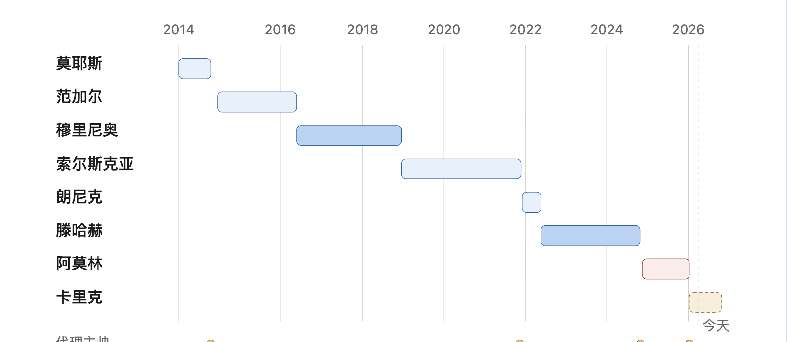
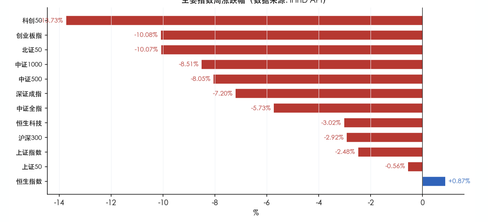
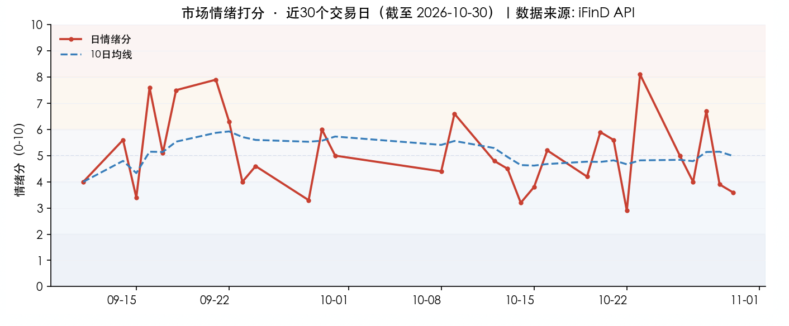
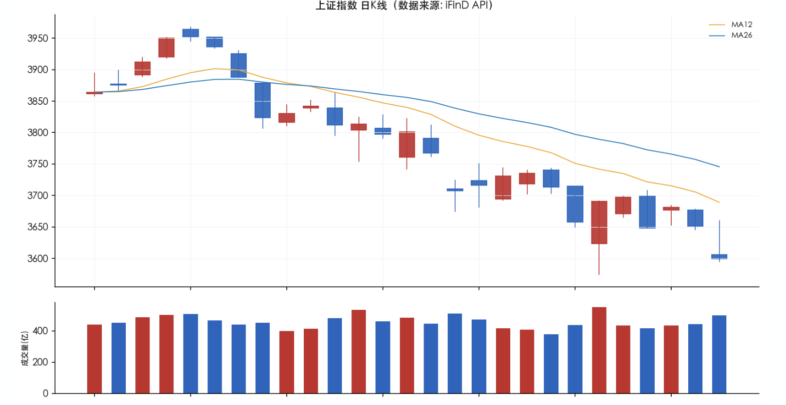

投资备忘20261101-换教练能拯救曼联么
2026-10-26 — 2026-11-01 · W44 · 周度备忘
本周本来市场顺着上周五的情绪改善尝试上攻，也骗到不少资金，没想到最后两个交易日拉了坨大的。大盘指数和科技指数剧烈分化，虽然上证仅下跌 2.5%，创业板、科创板跌幅接近 10%，并创本轮调整以来的新低，市场的惨烈程度堪比 7 月份。但闹心的还不仅仅是股票市场——一直追的球队，联赛 9 轮积 7 分，属于历史最差开局跌入降级区；欧冠同样惨不忍睹，对阵科莫失败之后，队员开始撕逼管理层和教练，好像换个教练就能拯救曼联，就像换个村长就能救缅A。
话题：换教练能拯救曼联么
弗格森之后 13 年的时间，8 任主帅除了穆里尼奥胜率还可以，其他教练或者给的时间太短（莫耶斯），或者领导力缺失（阿莫林），其他都是垃圾。

教练是背锅侠。之所以频繁换教练当然是因为成绩差，导致球员、球迷、管理层和教练积累了大量的不满；成绩不好有教练、球员和管理层的责任，教练是成本最低的背锅选择——因为你不可能遣散 11 名球员、解雇老板，那么教练就是成本最低的选择。
换教练的实际代价极高。一个球队换教练换的不仅仅是一个主帅，会换理念、换队型、换球员，同时还需要与管理层、球员进行磨合。以滕哈赫为例，买了一帮被称为"腾家军"的队员，转会费上大肆投入，花了 6 亿欧元；他看上的球员都是溢价被坑；失败之后只会"口嗨"。下台之后还需要处理他当时买下的垃圾球员，包括现在的利马。
换教练就是死循环。基本经历路径类似：换教练——换阵型——成绩差——换教练。如果换阵型——成绩好——管理层不花钱——成绩差——换教练。
所以，换教练救不了曼联，就像换村长救不了缅A一样，该换的是傻波球员和管理层。
本周市场：权重托底、普跌深蹲
本周节奏是"一日反抽、两日重挫"的宽幅震荡下行：周一高开后连续两日普跌（10-27 仅 606 家上涨、10-30 失守 3600 点），中间穿插 10-28 一次 4156 家普涨的技术性反抽，但未能改变重心下移趋势。全周成交额维持在 1.46-1.67 万亿区间，未见显著缩量——筹码激烈交换而非恐慌性抛售的极致缩量，多空仍在高位反复拉锯。中位数（-7.34%）显著弱于中证全指（-5.73%）与上证（-2.48%），印证本周是"权重托底、普跌深蹲"行情：指数被大市值、低估值权重股撑住，而占绝大多数的中小盘个股跌幅更深。

风格极致偏向低估值、低市盈率防御品种，估值因子呈现严格单调——市盈率越低、跌得越少，甚至低市盈率风格逆势收涨。高价股、微利股、高市盈率股（即前期涨幅最大的成长/题材品种）遭遇最猛烈的估值回归。这是典型的"高切低"避险再平衡：资金从高估值成长撤出，涌入低估值红利。
"高切低"避险主线：红利（银行/煤炭/石油石化/保险）逆势走强，AI 算力链（PCB/CPO/半导体设备/存储/铜缆）重挫 12%-20%，是本周最核心的结构性对立。
美股科技财报冲击是导火索：谷歌、英特尔、亚马逊财报暴雷引发全球半导体/AI 硬件估值杀，直接传导至 A 股电子/通信板块。
消费与医药逆势抗跌：白酒/食品饮料/创新药/CXO 在机构"消费回归""医药拐点"观点下获得防御性配置，与科技股形成跷跷板。
市场展望
宏观：海外的风险，特别是海外科技可能继续调整的风险仍然需要关注。
市场资金 & 情绪：市场情绪从上周五的亢奋到本周全面退潮——10-23 当日情绪曾飙升至 8.1（亢奋/过热），为近一个月最高，反映当时 V 型反转的爆发力；但近两周（5.3）与近一月（5.4）均值仍处中性，情绪中枢尚未趋势性抬升。两融的余额逐步回到年初的水平，去杠杆的风险得到较大的释放；但是在持续下跌的情况下，空仓的资金更加谨慎、满仓的资金恐慌、加仓的资金抱团防守资产——本周连白酒都出现全面上涨。

模式识别（中期）：构筑新震荡是基准情形，但仍有快速下跌风险。无论是对比 2022 年还是 2015 年，破位下跌之后会在底部形成两种情形：构筑震荡、V 型反转。这其中的共同点包括：1）构筑震荡的时间越长，再次探底的概率越大、越激烈；2）新的震荡区间以上一个中枢的底部为上沿，形成较强压制；3）V 型反转需要快速下跌 5%-10%，并开始放量反弹。
模式识别（短期）：市场正在构筑震荡结构，会在短期确认是下跌中继并再次破位？还是能够构筑新的震荡区间？这个区间 3570-3700 之间——上沿是 7 月份、10 月份下跌的底，对大盘的压制很硬；下沿是上周五大量卖出、去杠杆的情绪性崩盘。

组合备忘
Beta 组合微跌，表现明显跑赢市场（市场是指中证全 A -5.73%），Macro 组合微跌。本周市场下跌组合小幅下跌、有明显相对收益。Beta 策略本周下跌 **%；Macro 策略下跌 **%。组合仓位基本持平：Beta 策略仓位 80%，Macro 策略仓位 73%（其中转债 30%）。组合超额收益主要来自 HALO 资产和消费红利资产的抱团上涨，机器人基本稳定，短线科技资产拖累组合。
本周操作：仓位基本稳定，以调整结构为主。结构上红利消费资产下降、科技增加——在能够看更长周期、短期由于情绪大幅下跌、估值合理的科技资产上，增加仓位。
下一步：市场要么震荡、要么快速破位的情形下，寻找优势策略——仓位不向上顶、结构做好调整、交易策略要想好买入和卖出点。这样在震荡的情况下，结构调整贡献弹性；破位的时候（指数 5%+），仓位提供交易机会，同时一定要明确卖出目标价。
仓位上：寻底阶段继续控制、灵活交易。
结构上：底部加仓的交易型资产利用反弹减仓、红利消费资产有超额收益减仓，HALO 资产保持稳定。
研究：符合条件科技资产、明年投什么。